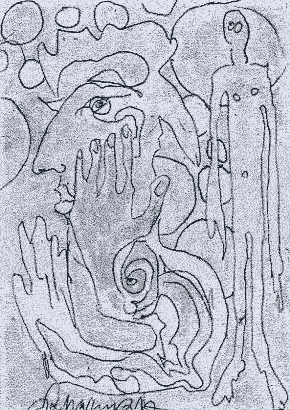

 |
dunst holder workshop og sommerudstilling i bøssehuset
på Christiania.
Hvis du har noget at bidrage med, enten billedkunst, skulptur, installation,
video, performance, fotografi, keramik, beklædning eller noget helt
andet, er du velkommen til at deltage.
"Kunst i dunst workshop"
Onsdag og Torsdag den 23 - 24 juli.
kl. 10 - hele dagen.
"Kunst i dunst Sommerudstilling"
Ferniseringen fredag den 25. Juli
kl. 16 - 23
Performance kl. 19
Åben:
Lørdag og Søndag åben fra 16 - 23
Gratis.
|